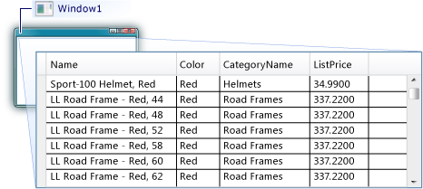

Создайте проект приложения WPF на Visual Basic или C# с именем DataGridSQLExample. В обозревателе решений щелкните проект правой кнопкой мыши, выберите сначала Добавить, а затем Новый элемент. Откроется диалоговое окно Добавление нового элемента. В области "Установленные шаблоны" выберите Данные и в списке шаблонов выберите ADO.NET EDM (модель данных с использованием сущностей).
ADO.NET Entity Data Model item templateНазовите файл AdventureWorksModel.edmx, а затем щелкните Добавить. Появится мастер модели EDM. На экране «Выбор содержимого модели» выберите Конструктор EF из базы данных, а затем нажмите кнопку Далее. На экране «Выбор подключения к данным» укажите подключение к базе данных AdventureWorksLT2008. Дополнительные сведения см. в статье Диалоговое окно «Выбор подключения к данным». Проверьте, чтобы имя было AdventureWorksLT2008Entities и чтобы был установлен флажок у параметра Сохранить параметры соединения сущности в App.Config как:, после чего нажмите Далее. На экране «Выбор объектов базы данных» разверните узел «Таблицы» и выберите таблицы Product и ProductCategory. Вы можете создавать классы сущностей для всех таблиц; однако в этом примере данные извлекаются только из этих двух таблиц.
Select Product and ProductCategory from tablesНажмите кнопку Готово. Сущности Product и ProductCategory отображаются в конструкторе сущностей. Product and ProductCategory entity models Получение и представление данных Откройте файл MainWindow.xaml. Задайте для свойства Width элемента Window значение 450. В редакторе XAML добавьте следующий тег DataGrid между тегами
КопироватьWindow with DataGrid Выберите Window. С помощью меню свойств окна или редактора XAML создайте для элемента Window с именем Window_Loaded обработчик событий для события Loaded. Дополнительные сведения см. в разделе Практическое руководство. Создание простого обработчика событий. Ниже показан код XAML для файла MainWindow.xaml. Примечание Если используется Visual Basic, в первой строке MainWindow.xaml замените x:Class="DataGridSQLExample.MainWindow" на x:Class="MainWindow". XAML Копировать Откройте файл кода программной части (MainWindow.xaml.vb или MainWindow.xaml.cs) для элемента Window. Добавьте следующий код, чтобы получать только определенные значения из объединенных таблиц, и назначьте свойство ItemsSource элемента DataGridдля результатов запроса.
C#
Копировать
using System.Data.Entity.Core.Objects;
using System.Linq;
using System.Windows;
namespace DataGridSQLExample
{
///
/// Interaction logic for MainWindow.xaml
///
public partial class MainWindow : Window
{
AdventureWorksLT2008Entities dataEntities = new AdventureWorksLT2008Entities();
public MainWindow()
{
InitializeComponent();
}
private void Window_Loaded(object sender, RoutedEventArgs e)
{
var query =
from product in dataEntities.Products
where product.Color == "Red"
orderby product.ListPrice
select new { product.Name, product.Color, CategoryName = product.ProductCategory.Name, product.ListPrice };
dataGrid1.ItemsSource = query.ToList();
}
}
}
Запустите пример.
Должен отображаться элемент DataGrid с данными.

public Window5()
{
InitializeComponent();
var selectedData = db.HistoryVhoda.Select(e => new { e.login, e.Time, e.popitkavhoda }).ToList();
MyDataGrid.ItemsSource = selectedData;
}